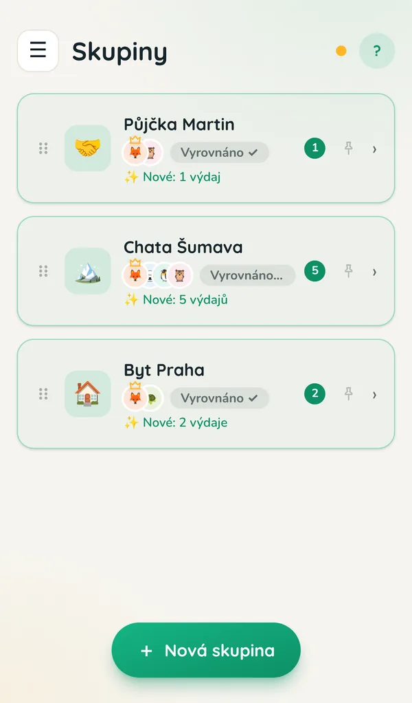
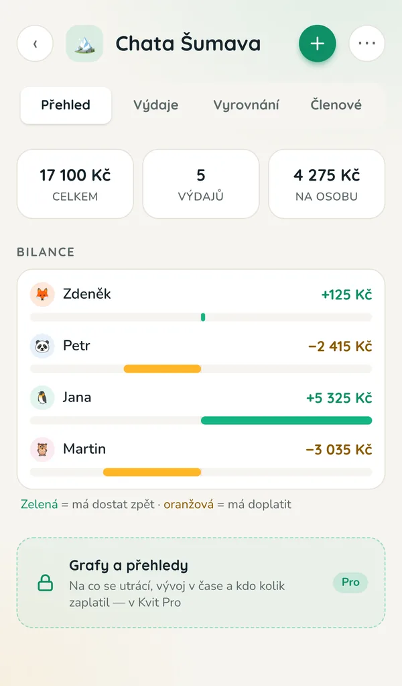
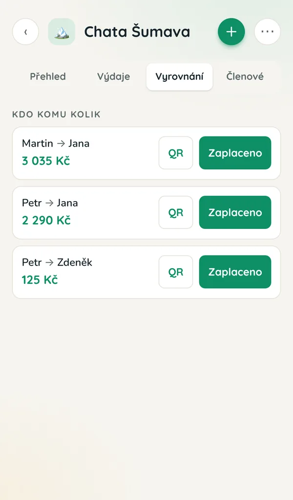

Vlastní aplikace · běží
Kvit
Aplikace na férové dělení společných výdajů. Založíš skupinu, pošleš kamarádům odkaz, píšete výdaje a Kvit na konci řekne, kdo komu kolik pošle. Vznikla z vlastní potřeby: chtěl jsem dělit výdaje s kamarády bez limitů a reklam.



Snímky s ukázkovými daty.
- způsoby dělení výdajů
- 4
- platba při vyrovnání
- QR
- funguje i bez signálu
- offline
- listopad 2026
- v1.1
Zadání
Kdo komu kolik?
-
Výlet, byt, dovolená
Při společných výdajích se rychle ztratí přehled. Kdo platil benzín, kdo nákup, kdo ubytování?
-
Aplikace s limity
Podobné aplikace mají reklamy nebo omezení. Chtěl jsem jednoduchou a férovou.
Kvit vede bilanci každého člena a na konci navrhne co nejméně plateb, kterými se všichni vyrovnají. Zaplatit jde rovnou QR kódem.
Co jsem postavil a jak to pomáhá
Co Kvit umí
-
Skupiny pro každou příležitost
Výlet, domácnost, pár i půjčka. Kamarádi se připojí přes odkaz a nemusí mít účet.
Skupina je založená za minutu.
-
Čtyři způsoby dělení
Rovným dílem, podle vah, přesnými částkami nebo procenty.
Férově, i když každý jedl něco jiného.
-
Vyrovnání na pár klepnutí
Kdo komu kolik pošle, s QR platbou do banky.
Žádné přepisování čísel účtů.
-
Opakované výdaje a účtenky
Nájem a předplatné se zapíšou samy, k výdaji jde přiložit účtenka.
Nic se nezapomene.
-
Cizí měny a grafy
Kurzy podle ČNB a grafy útrat ve verzi Pro.
Přehled i z dovolené v zahraničí.
-
Offline a upozornění
Funguje i bez signálu a data se srovnají později. Upozornění, připomínky a export.
Výdaj zapíšete i na horách bez signálu.
Technologie React · TypeScript · Vite · Tailwind · Supabase na vlastním serveru · PowerSync · Docker
Další projekty
Co jsem postavil dál
Spolupráce
Máte nápad na aplikaci?
Rád pomůžu z nápadu udělat aplikaci, kterou budou lidé opravdu používat.
- Stav Běží, verze 1.1
- Pro kohokoli, kdo dělí výdaje
- Adresa app.kvit.cloud